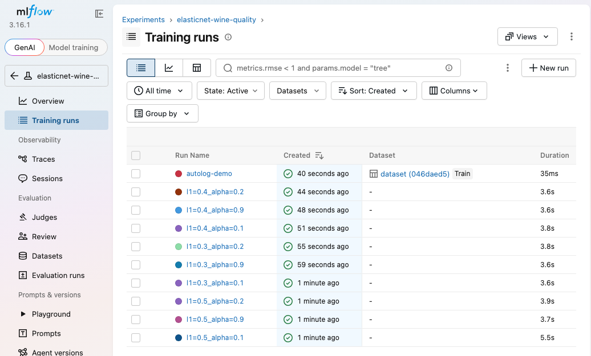
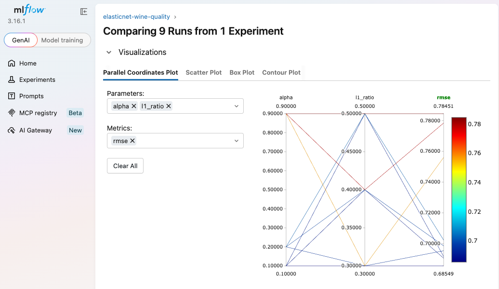

The instructor introduces experiment tracking. First comes hyperparameter tuning: try parameter combinations, compare the scores, keep the best. Tuning is cheap for small ML models but very expensive for deep learning. Tracking the trials by hand in a spreadsheet is slow and error-prone, and MLflow automates it: a few lines of code record every run, and a UI with plots such as parallel coordinates lets you pick the best model.
What it is, and why it's a problem for complex models.
Why you need it, and how MLflow does it.
MLflow with different parameters, tracked on a remote server (DagsHub).
You have lists of candidate values, for example P1 = learning rates 0.001, 0.002, 0.003 and P2 = optimizers SGD, Adam, RMSprop. For each combination, train the model, record the score, then compare and keep the best.
Tuning loop (the instructor's example scores)
Linear regression is y = m·x + c, with 2 weights to learn. Training is simple arithmetic, so tuning runs happily on a CPU.
Input nodes, hidden layers and output nodes, each connection with a weight, plus biases. The instructor's small drawing already has 12 weights. With 100 layers the count explodes, and you need a GPU.
The instructor's small network: 3 inputs → 2 → 2 → 1 output
Trainable parameters, from linear regression to ResNet-50 (log scale)
Computed in the hands-on notebook. ResNet-50 and BERT-base are their published sizes. Hover a bar.
A second scenario: no big tuning search, just a few candidate values you already suspect are good. The model is scikit-learn's ElasticNet, linear regression with L1 + L2 regularisation, used when a model over- or under-fits. It has several parameters: alpha, l1_ratio, fit_intercept, precompute, max_iter… The instructor focuses on two:
l1_ratioCandidates chosen from experience: 0.5, 0.3, 0.4.
alphaCandidates: 0.1, 0.9, 0.2.
An experienced data scientist narrows the options like this, the same way you'd usually start with a learning rate of 0.001 without searching. The best value is somewhere among the candidates, and experiments find which one:
| Experiment | l1_ratio | alpha | score (video) |
|---|---|---|---|
| 1 | 0.5 | 0.1 | 0.59 |
| 2 | 0.3 | 0.9 | 0.77 |
| 3 | 0.4 | 0.2 | 0.91 ✓ |
With 50 or 100 candidate values you'd run 50 or 100 experiments. To remember the results, the traditional approach is a spreadsheet: one column for the iteration, one for each parameter, one for the score.
| A · iteration | B · l1_ratio | C · alpha | D · score | |
|---|---|---|---|---|
| 2 | 1 | 0.5 | 0.1 | 0.59 |
| 3 | 2 | 0.3 | 0.9 | 0.77 |
| 4 | 3 | 0.4 | 0.2 | 0.91 |
| 5 | … | … | … | … |
| 101 | 100 | ? | ? | ? |
Collecting values, typing them in, and scanning rows by eye to find the best model and parameters.
Beyond the video: a row doesn't record which code version, data or model file produced it, and sharing the sheet across a team gets messy fast.
MLOps tools exist to automate the work you'd otherwise do by hand. Manual experiment tracking is exactly that kind of work, and that's where MLflow comes in.
Add a few MLflow calls to your training code and it automatically records every experiment. You then get a web UI where you can look at plots, graphs, loss and accuracy, and choose the best model.
On the MLflow website the instructor points to a parallel coordinates plot and says it's how you identify the best model. Each vertical axis is one parameter or metric, and each line is one run, passing through its values. Lines that end low on the error axis are the good runs, and you can trace them back to their parameter values.
This one uses real results from the hands-on notebook: 9 ElasticNet runs on the wine-quality data. Hover a line.
9 runs: alpha → l1_ratio → RMSE
The same results as a grid: RMSE for every combination
Lower is better. Darker blue means lower error. Hover a cell for R².
| Component | What it does | In this course |
|---|---|---|
| Tracking | Log params, metrics, artifacts per run; compare in the UI | Ch 14–15 |
| Models | A standard format to save and load models (runs:/<id>/model) | hands-on below |
| Model Registry | Named, versioned models with aliases (e.g. champion) for promotion to production | Ch 15 (registered model) |
| Serving | mlflow models serve -m runs:/… exposes a REST endpoint | useful for your deployment practice |
| Evaluation & tracing | LLM/GenAI evaluation and tracing of agent calls | the "GenAI" side of the UI |
Red-wine quality data (1,599 wines, 11 features), 75/25 split, ElasticNet, MLflow 3.16 with a SQLite store (mlflow.db).
mlflow.search_runs(order_by=["metrics.rmse ASC"])The best run was l1_ratio = 0.3, alpha = 0.1 → RMSE 0.6855, R² 0.240, a combination the three hand-picked experiments never tried. The notebook reloads that run's model with mlflow.sklearn.load_model("runs:/<id>/model") and predicts with it.
Screenshots of this experiment in the MLflow UI (mlflow ui --backend-store-uri sqlite:///mlflow.db):

Training runs: the 9 grid runs plus the autolog demo run.

Compare → Parallel Coordinates Plot, the chart the instructor points to, drawn by MLflow from our runs.
mlflow.sklearn.autolog() logged 11 parameters (alpha, l1_ratio, max_iter…) and training metrics (training RMSE 0.680, R² 0.301) with no explicit log calls.
Systematically recording every training run so it can be compared and reproduced. Log hyperparameters, metrics (and their curves), the model artifact, the code version (Git commit), the data version (DVC hash or dataset ID), the environment (package versions) and tags or notes. MLflow records the Git commit and source automatically when available.
Grid tries every combination: exhaustive, but it explodes combinatorially. Random samples combinations and often finds good regions with far fewer runs. Bayesian or adaptive methods (Optuna, Hyperopt) use past results to choose the next trial. For expensive deep learning, add early stopping or pruning (ASHA/Hyperband), tune on a data subset, or start from known-good defaults.
Millions of parameters make each training run take GPU-hours, the search space is larger (learning rate, batch size, architecture, optimizer, regularisation), and results vary with random seeds. So each trial is costly, and tracking every trial matters even more.
mlflow.search_runs(experiment_names=[...], order_by=["metrics.rmse ASC"]) gives a DataFrame, and the first row is the best. Load it with mlflow.<flavor>.load_model(f"runs:/{run_id}/model"), or register it in the Model Registry and point production at an alias such as models:/wine@champion.
It patches supported libraries (scikit-learn, XGBoost, PyTorch Lightning…) to log parameters, metrics and models automatically. Avoid or limit it when you need custom evaluation metrics on a held-out set, want to control artifact size, or log many tiny runs (you can pass log_models=False).
Local (mlruns/ or a SQLite file) suits solo experiments. A tracking server with a database backend and remote artifact store (S3/GCS), or a hosted service such as DagsHub or Databricks, lets a team share runs, use the Model Registry, and log from CI and cloud jobs.
Accuracy counts exact class matches, which is meaningless for continuous predictions. Use RMSE (penalises large errors, same units as the target), MAE (robust, easy to read) and R² (share of variance explained).
l1_ratio and alpha values, several experiments, pick the best.